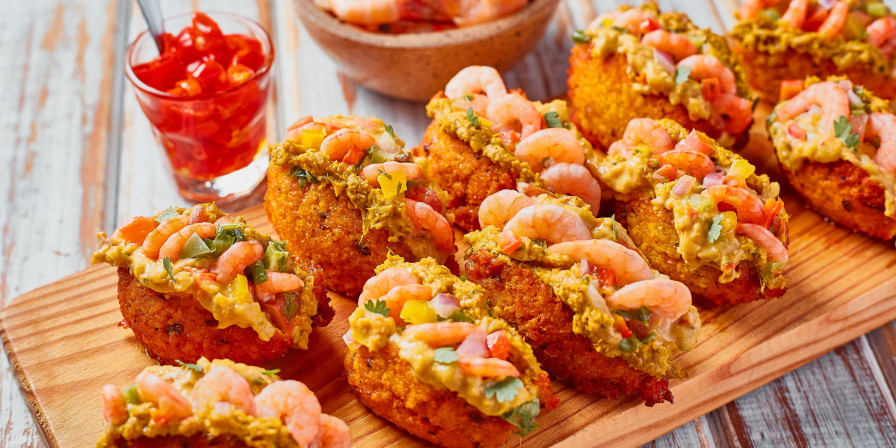
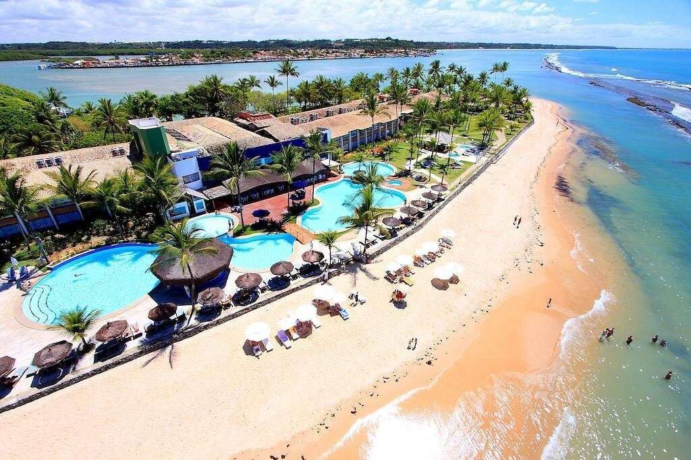

Um pouco sobre a Bahia
A Bahia é um estado rico em cultura e tradições, conhecida por sua música, dança, comidas e história. A capital, Salvador, é um dos principais destinos turísticos do Brasil, com uma rica herança africana e colonial.

Pelourinho
O Pelourinho, localizado no centro histórico de Salvador, é um dos pontos turísticos mais importantes da Bahia. Conhecido por suas casas coloridas, ruas de pedra e igrejas antigas, o local guarda uma rica história que remonta ao período colonial. Além da arquitetura marcante, o Pelourinho é um espaço cheio de cultura, com música, dança, arte e tradições afro-brasileiras. Hoje, é um símbolo da identidade baiana e um lugar muito visitado por turistas do mundo inteiro.

Acarajé
O acarajé é um dos pratos mais tradicionais da culinária baiana e um grande símbolo da cultura afro-brasileira. Ele é preparado com massa de feijão-fradinho, moldada em bolinhos e frita no azeite de dendê, o que dá sua cor e sabor característicos. Depois de pronto, o acarajé é recheado com ingredientes como vatapá, caruru, salada e camarão seco.

Porto Seguro
A praia de Porto Seguro, na Bahia, é um dos destinos turísticos mais famosos do Brasil, conhecida por suas águas claras, areia dourada e clima tropical agradável.